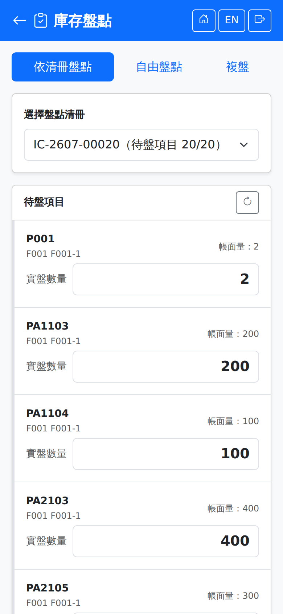

提供三種盤點方式，上方三顆按鈕切換。盤點清冊由桌機開立，手機負責現場輸入實盤數量；盤盈虧的調整則回到桌機處理。Three ways of counting, switched with the three buttons at the top. Count sheets are raised on the desktop and the phone is for entering the counted quantities on the floor; gain and loss adjustments go back to the desktop.

庫存盤點畫面（依清冊盤點，已選擇一張進行中的清冊）Stock count screen (counting by sheet, with an open sheet selected)
三種模式The three modes
| 模式Mode | 使用時機When to use it |
|---|
| 依清冊盤點By Sheet | 最常用。選一張進行中的盤點清冊，逐項輸入實盤數量。清冊由桌機事先開立。The usual one. Choose an open count sheet and enter the counted quantity item by item. The sheet is raised on the desktop beforehand. |
| 自由盤點Free Count | 沒有清冊時使用。掃一個儲位，畫面列出該儲位的所有庫存供逐項輸入。For when there is no sheet. Scan a location and the screen lists everything held there for you to count. |
| 複盤Recount | 初盤有差異時的第二次確認。系統會擋下與初盤同一人，必須由不同的人複盤。The second check when the first count showed a difference. The system blocks the person who did the first count, so it has to be someone else. |
依清冊盤點Counting by sheet
1在「選擇盤點清冊」下拉挑一張清冊。若顯示「目前無進行中的盤點清冊」，代表桌機尚未開立或清冊已結案。Pick a sheet from the "Select Count Sheet" dropdown. "No open count sheets" means none has been raised on the desktop, or they are all closed.
2「待盤項目」逐項顯示品號與「帳面量」，在旁邊輸入實際點到的數量。Each item under "Pending Items" shows the product and its "Book Qty"; enter what you actually counted beside it.
3全部輸入後點「送出盤點結果」。When they are all entered, tap "Submit Count".
自由盤點Free counting
1在「選擇盤點儲位」掃描或輸入儲位代碼。掃箱號則只盤這一箱：畫面換成箱子所在儲位，只列箱子的品號與批號。Scan or type the code under "Select Location". Scanning a box number counts just that box: the screen switches to the box's location and lists only the box's item and lot.
2畫面列出該儲位的每個品項，顯示「系統：」帳面數量，在「實盤數量」輸入實際數量，下方即時顯示「差異：」。The screen lists every item at that location with its "Sys: "quantity; enter what you counted in "Count Qty" and the "Diff: "figure updates below.
3點「加入待送出清單」把這個儲位的結果暫存，接著可再掃下一個儲位。Tap "Add to Pending List" to hold this location's result and move on to the next one.
4全部盤完後點「送出全部」一次送出。When everything is counted, tap "Submit All" to send it all at once.
儲位若無庫存紀錄，畫面會說明「仍可新增品項盤點」——盤到帳上沒有的東西時，直接輸入品號與數量即可，這正是盤盈的來源。If a location has no stock on the books, the screen says you can still add items — when you find something that is not on the books, just enter the product and the quantity. That is exactly where a count gain comes from.
送出後After submitting
送出後畫面上方出現結果卡：全部吻合時顯示「所有品項數量吻合」（綠色），有差異或有品項失敗時轉為黃色並逐項列出原因。依清冊盤點時，整張清冊都盤完後它會從下拉清單消失；若那是最後一張，下拉變空屬正常結果，不會再跳「目前無進行中的盤點清冊」提示。A result card appears at the top: green with "All quantities match" when everything agrees, or amber listing each item and its reason when there are differences or failures. When counting by sheet, a fully counted sheet drops out of the dropdown; if it was the last one the dropdown is simply empty, and no "No open count sheets" notice is shown.
盤盈虧的調整單由桌機的「庫存調整單」處理，手機不執行調整過帳。Gain and loss adjustments are handled by the Stock Adjustment screen on the desktop; the phone does not post adjustments.
斷線時When the connection drops
盤點清冊與待複盤清單需要連線才載得出來。連不上時畫面顯示「需要連線」，不會用舊的清冊頂替。Count sheets and the recount list need a connection to load. When the server cannot be reached the screen says "Connection required"; an old sheet is never shown in its place.
1按送出時若剛好斷線，盤點結果會先暫存在手機，畫面提示「連不上伺服器，盤點結果已暫存在手機，恢復連線後自動送出」，已送出的那一批會從畫面拿掉，避免重按變成第二筆。If the connection drops just as you submit, the results are saved on the phone and the screen says "Server unreachable — count results saved on the phone and sent when the connection returns"; the batch disappears from the screen so that tapping again does not create a second entry.
2帳面量取的是送達伺服器當下的庫存，斷線期間若有進出，差異會包含那段期間的異動；若有明細失敗（例如期間別人已複盤），待送出清單會留黃字，那幾行要重盤。The book quantity is the stock at the moment the results reach the server, so any movements during the disconnection show up in the difference; if some lines fail (for example someone else recounted meanwhile) the waiting list keeps a yellow note and those lines must be counted again.
還沒按送出的數量只在畫面上，離開或重新整理頁面就會消失（自由盤點清單尚有未送出品項時，離開前會跳確認提示）。訊號不穩的倉區建議分批少量送出。詳見斷線保護。Quantities not yet submitted exist only on screen and are lost if you leave or reload the page (a free-count list with unsent items asks before you leave). In areas with a weak signal, submit in small batches. See Disconnection protection.
SmartFactory MES 系統使用手冊 | 如需協助請聯繫系統管理者SmartFactory MES User Manual | Contact your system administrator if you need help